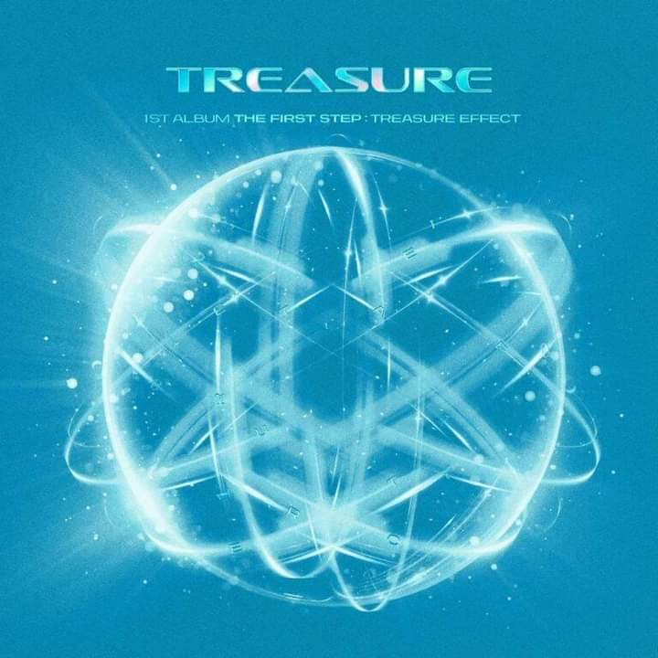

|

|
Album: " THE FIRST STEP: THE TREASURE EFFECT"
Writers: Haruto, Yoshi, Choi Hyun Suk with Min Yeon Jae and BIGTONE.
Released: 11th January,2021
"My Treasure" contain "meaning that everyone is a unique treasure-like being, which gives a hopeful message of 'Let’s cheer up in hard times and as a "bright and exciting pop song" that will "cheer up the listeners and make them feel better in these hard times".
Watch and Listen Here
|